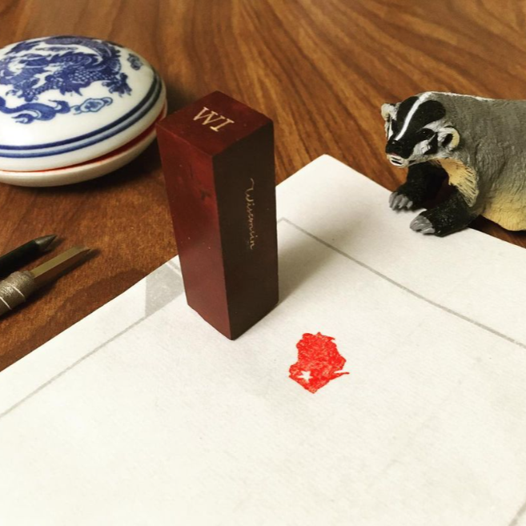
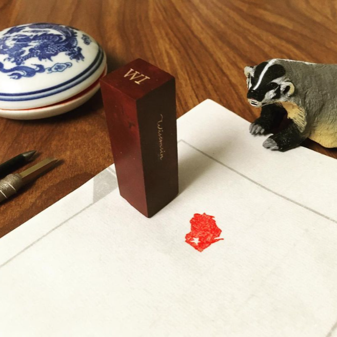

My name is Chenxiao (Atlas) Guo 郭晨曉. I am a Ph.D. student in Geography
(cartography / GIS) with doctoral
minor in Computer Science at the University of Wisconsin-Madison.
I am a graduate student member of
Spatial
Computing and Data Mining (SCDM) Lab and
UW
Cartography Lab (CartLab).
My research direction includes spatiotemporal
analytics, cartographic visualization, social media data mining, and natural disaster
management, devoted to bridging geospatial data science, cartography and social good.
Internship | Research | Teaching | Education
— GIS Development Intern at
United Nations Development
Programme (UNDP),
Global Centre
— Major Project:
Small Island Developing States (SIDS) Geospatial
Dashboard
— GIS and Data Visualization Intern at
Community Broadband
Network,
Institute for
Local Self-Reliance
— Multiple projects of cartographic visualization (static maps)
— Project Assistant (Curriculum Upgrade) for
UW-Madison GIS
Professional Programs
— Revised Courses:
Cartography,
Graphic Design in Cartography

— Ph.D. in Geography
(Cartography/GIS)
— Doctoral Minor in Computer
Science
— Spatial
Computing and Data Mining (SCDM) Lab
— UW
Cartography Lab (CartLab)
— Lecturing Course: Cartography
— TA Courses:
Cartography, Interactive Cart &
Geovisualization, Geocomputing, GIS, GIS Applications,
Intro GIScience
— Advisor: Qunying Huang and Rob
Roth
— Current GPA: 3.7/4.0
— Graduate Research Assistant,
App Development Group,
Information Technology Outreach Services
(ITOS),
Carl Vinson Institute of
Government
— Major Project: GNAHRGIS-Ecology
(Georgia Department of Natural Resources)
— M.S. in Geography
(GIS)
— Community
Mapping Lab
— Chair of Logistic Committee,
First Campus-wide UGA GIS
Day
— TA Course:
Transportation
Modeling and GIS
— Advisor: Xiaobai (Angela) Yao
— GPA: 3.7/4.0
— Undergraduate Research Assistant,
— Multiple Projects Collaborating with
Center for Historical Geography (Department of
History), Big Data Communication Lab
(School of Communication
and Design)
— B.S. in Geographic Information Sciences, Department of RS and GIS
Engineering,
School of Geography and
Planning
— Excellent Student Scholarship
(2012, 2013, 2014)
— Excellent Graduate Award (2015)
— Advisor:
Lin Liu
— GPA: 3.8/4.0
Download PDF Resume or Full Curriculum Vitae

Hometown Mapping Project;
Best Cartographic Design in
2023 NACIS
Map Competition

Practically serving Chinese
student communities at
the
University
of
Georgia

Most Innovative Map and
Cartography Excellent Award
in 2023 Esri
User Conference

A comprehensive and creative
visualization of seven
different
types
of natural
disasters in the U.S.

Various projects during
internship at ILSR

Best Print Map in 2022
CaGIS Map Competition

Geovisualization of twitter-
based trajectories;
on Esri
Map Book
Vol.39

UCGIS Poster Presentation
for evaluating the
gender
representativeness of twitter

Innovative twitter-based
visualization of 2017
Hurricane Harvey

Participated Mapbox-based
web map development
during internship
at
UNDP

Award-winning web/mobile
application with 80K views
Group project of interactive
map application based on
Leaflet
and D3
package

Customized web map
with ancient Chinese fonts, icons,
and color
scheme design
based on MapBox Studio

A story of the unexpected
Hurricane Harvey using
Esri StoryMaps
narrative

MapBox-based customized
web map with H.P. related
sites in the
U.K.

Animations of subtle
topography on surface of
loess tableland in
Nebraska;
2023 Design Challenge

Cartography Curriculum
Design for K5 Education;
2022 Design
Challenge

Contributing categorical
dot density map using
pricing stickers
for a tangible
Map Quilt Challenge project
Multivarious news map
illustrating congressmen and
governors in
U.S. Congress
Chinese news map for
local media MADNEWS

Over 800 daily infographics
with maps for MADNEWS
Minimalism design showing
the effecting countries,
cities, and
more info
News map of archeological
sites, such as cultural relics
and
city wall ruins
Bilingual quick news map
(country borders according to
People's
Republic of China)

Value-by-alpha map of
sentiments with twitter
representativeness
level

Bivariate choropleth map
visualizing the covid case
per capita
v.s. vaccination
rate in recent week

Exploration with 5 million
trajectories regarding covid-19
using
Kepler.gl tool
Grayscale memorial map
with hillshade topography

Personal map product
illustrating my past and future
road trip
routes between
UW-Madison and UGA
Practical map for my parients'
travel with attraction sites
and transportation info

Carving Robinson Projection
map onto ellipsoid
(pumpkin),
compromising
between
3D globe and flat surface

Innovative graphic design of
transit map in memory of 2020
home
quarantine
days
within apartment unit

Engraving maps on sealstone
material as image stamps:
China,
Wisconsin, and Zibo
As an "Atlas", I keep enriching myself.

 

Cartography is a charming journey. I am always on the way.
After acquiring my doctoral degree, I am willing to work in cartographic/geospatial companies or organizations, applying the essential value of cartographic visualization, geospatial science, and emerging techniques in computer science and artificial intelligence to design more innovative cartographic visualizations, and provide more comprehensive and intelligent location-based services.
I come from Zibo 淄博, a historical and industrial city in eastern China (see my award-winning Zibo Map of Culture and Tourism). I used to live in Jinan, Zhuhai, Taipei, Guangzhou, Athens (GA), Madison/Middleton, Athens (GA) again, and currently back in Madison. As a geography person (an "Atlas"), I keep learning from not only classroom and books, but also nature and our society. I believe that technology should provide more insights in understanding the geographic environment, and serving society. I will play my role via maps.
Besides the academic and professional advances, I also love exploring the world via my hobbies:
Collecting interesting maps has always been my hobby since childhood. I have got a great collection of hundreds of maps, globes and atlases, of various themes, types and textures.
I love both Chinese and English calligraphy / penmanship, especially Zhuanke 篆刻 (seal engraving), which is carving stone seals (stamps) with ancient Chinese characters in seal script 篆書.
I'm crazy about traditional Irish music, and I actively play the tin/low whistles in local Irish Sessions. I also played the Gugin 古琴 and whistles in Asian Musical Instrument Community Ensemble.
My hobby list continues with photography, watercolor painting, cycling, hiking, stamping,
wax-sealing, traveling, reading... It is of great fun to keep exploring:
"Go into all
the world"